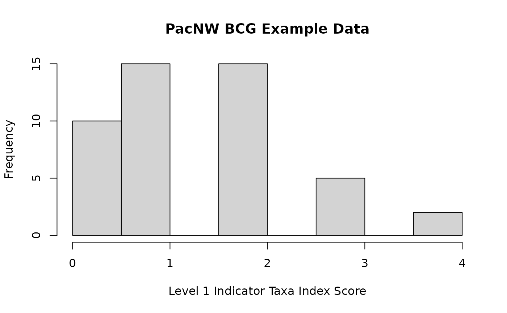

This function calculates metric scores based on a Thresholds data frame. Can generate scores for categories n=3 (e.g., 1/3/5, ScoreRegime="Cat_135") or n=4 (e.g., 0/2/4/6, ScoreRegime="Cat_0246") or continuous (e.g., 0-100, ScoreRegime="Cont_0100").
metric.scores( DF_Metrics, col_MetricNames, col_IndexName, col_IndexRegion, DF_Thresh_Metric, DF_Thresh_Index, col_ni_total = "ni_total" )
| DF_Metrics | Data frame of metric values (as columns), Index Name, and Index Region (strata). |
|---|---|
| col_MetricNames | Names of columns of metric values. |
| col_IndexName | Name of column with index (e.g., MBSS.2005.Bugs) |
| col_IndexRegion | Name of column with relevant bioregion or site class (e.g., COASTAL). |
| DF_Thresh_Metric | Data frame of Scoring Thresholds for metrics (INDEX_NAME, INDEX_REGION, METRIC_NAME, Direction, Thresh_Lo, Thresh_Mid, Thresh_Hi, ScoreRegime , SingleValue_Add, NormDist_Tail_Lo, NormDist_Tail_Hi, CatGrad_xvar , CatGrad_InfPt, CatGrad_Lo_m, CatGrad_Lo_b, CatGrad_Mid_m, CatGrad_Mid_b , CatGrad_Hi_m, CatGrad_Hi_b). |
| DF_Thresh_Index | Data frame of Scoring Thresholds for indices (INDEX_NAME, INDEX_REGION,METRIC_NAME, ScoreRegime, Thresh01, Thresh02 , Thresh03, Thresh04, Thresh05, Thresh06, Thresh07 , Nar01, Nar02, Nar03, Nar04, Nar05, Nar06). |
| col_ni_total | Name of column with total number of individuals. Used for cases where sample was collected but no organisms collected. Default = ni_total. |
vector of scores
The R library dplyr is needed for this function.
For all ScoreRegime cases at the index level a "sum_Index" field is computed that is the sum of all metric scores. Valid "ScoreRegime" values are:
* SUM = all metric scores added together.
* AVERAGE = all metric scores added and divided by the number of metrics. The index is on the same scale as the individual metric scores.
* AVERAGE_100 = AVERAGE is scaled 0 to 100.
# Example data library(readxl) library(reshape2) # Thresholds fn_thresh <- file.path(system.file(package="BioMonTools"), "extdata" , "MetricScoring.xlsx") df_thresh_metric <- read_excel(fn_thresh, sheet="metric.scoring") df_thresh_index <- read_excel(fn_thresh, sheet="index.scoring") #~~~~~~~~~~~~~~~~~~~~~~~~ # Pacific Northwest, BCG Level 1 Indicator Taxa Index df_samps_bugs <- read_excel(system.file("extdata/Data_Benthos.xlsx" , package="BioMonTools") , guess_max = 10^6) myIndex <- "BCG_PacNW_L1" df_samps_bugs$Index_Name <- myIndex df_samps_bugs$Index_Region <- "ALL" (myMetrics.Bugs <- unique(as.data.frame(df_thresh_metric)[df_thresh_metric[ , "INDEX_NAME"]==myIndex, "METRIC_NAME"]))#> [1] "nt_total" "nt_EPT" "nt_BCG_att1i2" "x_Shan_e" #> [5] "nt_longlived" "nt_Ephemerellid" "nt_Hepta" "nt_Nemour" #> [9] "nt_Perlid" "nt_Rhya" "nt_ffg_pred" "nt_noteworthy"# Run Function df_metric_values_bugs <- metric.values(df_samps_bugs, "bugs" , fun.MetricNames = myMetrics.Bugs) # index to BCG.PacNW.L1 df_metric_values_bugs$INDEX_NAME <- myIndex df_metric_values_bugs$INDEX_REGION <- "ALL" # SCORE Metrics df_metric_scores_bugs <- metric.scores(df_metric_values_bugs , myMetrics.Bugs , "INDEX_NAME" , "INDEX_REGION" , df_thresh_metric , df_thresh_index) if (FALSE) { # View Results View(df_metric_scores_bugs) } # QC, table table(df_metric_scores_bugs$Index, df_metric_scores_bugs$Index_Nar)#> #> Low Medium #> 0 163 0 #> 1 64 0 #> 2 45 0 #> 3 44 0 #> 4 49 0 #> 5 33 0 #> 6 40 0 #> 7 35 0 #> 8 28 0 #> 9 27 0 #> 10 32 0 #> 11 19 0 #> 12 23 0 #> 13 10 0 #> 14 14 0 #> 15 17 0 #> 16 11 0 #> 17 6 0 #> 18 4 0 #> 19 3 0 #> 20 0 4 #> 21 0 1 #> 23 0 2 #> 24 0 2 #> 27 0 2# QC, plot hist(df_metric_scores_bugs$Index, main="PacNW BCG Example Data" , xlab="Level 1 Indicator Taxa Index Score")#~~~~~~~~~~~~~~~~~~~~~~~~ # Metrics, Index, Benthic Macroinvertebrates, genus # (generate values then scores) myIndex <- "MBSS_2005_Bugs" # Thresholds # imported above # get metric names for myIndex (myMetrics_Bugs_MBSS <- unique(df_thresh_metric[df_thresh_metric[ , "INDEX_NAME"] == myIndex, "METRIC_NAME", TRUE]))#> [1] "nt_total" "nt_EPT" "nt_Ephem" "pi_tv2_intol" #> [5] "pi_Ephem" "nt_ffg_scrap" "pi_habit_climb" "pi_Chiro" #> [9] "pi_habit_cling" "pi_Tanyt" "pi_ffg_scrap" "pi_habit_swim" #> [13] "pi_Dipt"# Taxa Data myDF_Bugs_MBSS <- data_benthos_MBSS myDF_Bugs_MBSS$NONTARGET <- FALSE myDF_Bugs_MBSS$INDEX_REGION <- toupper(myDF_Bugs_MBSS$strata_r) myDF_Bugs_MBSS$SAMPLEID <- myDF_Bugs_MBSS$SITE myDF_Bugs_MBSS$INDEX_NAME <- myDF_Bugs_MBSS$Index.Name myDF_Bugs_MBSS$TAXAID <- myDF_Bugs_MBSS$TAXON myDF_Bugs_MBSS$SubPhylum <- NA myDF_Bugs_MBSS$SubFamily <- NA myDF_Bugs_MBSS$TOLVAL <- myDF_Bugs_MBSS$FinalTolVal07 myDF_Bugs_MBSS$TOLVAL2 <- myDF_Bugs_MBSS$FinalTolVal08 myDF_Bugs_MBSS$EXCLUDE <- myDF_Bugs_MBSS$EXCLUDE=="Y" myMetric_Values_Bugs_MBSS <- metric.values(myDF_Bugs_MBSS, "bugs" , myMetrics_Bugs_MBSS) if (FALSE) { View(myMetric_Values_Bugs_MBSS) } # SCORE myMetric_Values_Bugs_MBSS$INDEX_REGION <- toupper(myMetric_Values_Bugs_MBSS$INDEX_REGION) Metrics_Bugs_Scores_MBSS <- metric.scores(myMetric_Values_Bugs_MBSS , myMetrics_Bugs_MBSS , "INDEX_NAME" , "INDEX_REGION" , df_thresh_metric , df_thresh_index) if (FALSE) { # View Results View(Metrics_Bugs_Scores_MBSS) } # QC Index Scores and Narratives # Set Narrative as Ordered Factor Nar_MBSS <- c("Very Poor", "Poor", "Fair", "Good") Metrics_Bugs_Scores_MBSS$Index_Nar <- factor(Metrics_Bugs_Scores_MBSS$Index_Nar , levels=Nar_MBSS , labels=Nar_MBSS , ordered=TRUE) table(Metrics_Bugs_Scores_MBSS$Index, Metrics_Bugs_Scores_MBSS$Index_Nar, useNA="ifany")#> #> Very Poor Poor Fair Good #> 1 7 0 0 0 #> 1.28571428571429 3 0 0 0 #> 1.33333333333333 8 0 0 0 #> 1.5 8 0 0 0 #> 1.57142857142857 2 0 0 0 #> 1.66666666666667 9 0 0 0 #> 1.75 5 0 0 0 #> 1.85714285714286 6 0 0 0 #> 2 0 17 0 0 #> 2.14285714285714 0 6 0 0 #> 2.25 0 4 0 0 #> 2.33333333333333 0 10 0 0 #> 2.42857142857143 0 6 0 0 #> 2.5 0 3 0 0 #> 2.66666666666667 0 13 0 0 #> 2.71428571428571 0 6 0 0 #> 2.75 0 2 0 0 #> 3 0 0 20 0 #> 3.25 0 0 4 0 #> 3.28571428571429 0 0 3 0 #> 3.33333333333333 0 0 12 0 #> 3.5 0 0 5 0 #> 3.57142857142857 0 0 1 0 #> 3.66666666666667 0 0 10 0 #> 3.75 0 0 6 0 #> 3.85714285714286 0 0 6 0 #> 4 0 0 0 4 #> 4.14285714285714 0 0 0 10 #> 4.25 0 0 0 4 #> 4.33333333333333 0 0 0 6 #> 4.42857142857143 0 0 0 4 #> 4.5 0 0 0 1# QC bug count (manual) Metrics_Bugs_Scores_MBSS[Metrics_Bugs_Scores_MBSS[,"ni_total"]>120, "QC_Count"] <- "LARGE" Metrics_Bugs_Scores_MBSS[Metrics_Bugs_Scores_MBSS[,"ni_total"]<60, "QC_Count"] <- "SMALL" Metrics_Bugs_Scores_MBSS[is.na(Metrics_Bugs_Scores_MBSS[,"QC_Count"]), "QC_Count"] <- "OK" # table of QC_Count table(Metrics_Bugs_Scores_MBSS$QC_Count)#> #> LARGE OK #> 90 121# QC bug count (with function) # Import Checks #df_checks <- read_excel(system.file("./extdata/MetricFlags.xlsx" # , package="BioMonTools"), sheet="Flags") # Run Function #df_flags <- qc.checks(Metrics_Bugs_Scores_MBSS, df_checks) # Summarize Results # table(df_flags[,"CHECKNAME"], df_flags[,"FLAG"], useNA="ifany")